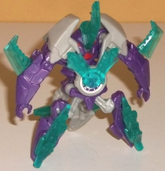
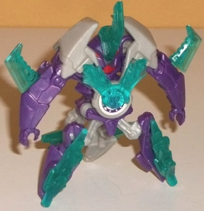

Size : Mini-Con
Difficulty of Transformation : Very Easy
Color Scheme : Light milky gray, moderately dark milky purple, transparent aquamarine, and some red
Individual Rating : 4.9
Allegiances: Autobot
 Airazor
Airazor

Size
: Mini-Con
Difficulty of Transformation
: Very
Easy
Color Scheme
: Light milky gray,
moderately dark milky purple, transparent aquamarine, and some red
Individual Rating
: 4.9
Like all (initial) Decepticon
Mini-Cons, Airazor's alt mode is meant to be a torpedo, and it fits the
general diagonal "shard" shape of the other Mini-Cons Fracture can deploy.
Like with most Mini-Cons, the alt mode is basically the other mode compressed
into this shape, so the hands and and feet are fairly obvious, and the
back end is rather hollow because of the transformation, but it still looks
pretty solid and fires out of Fracture pretty well, so it works. The color
scheme of purple and light gray matches Fracture's, and is certainly Decepticon-y.
I dislike the light milky gray plastic, as it's that really boring shade
of the color, but the moderately dark purple is a nice shade and it does
contrast against the gray. It should be worth noting that the transparent
armor bits (discussed shortly) can all fit in torpedo mode, which is a
big plus-- no little extra pieces to leave somewhere else.
Like with basically
every Mini-Con, Airazor transforms in one motion-- just pull out on the
arms to transform him to robot mode, and push them back in to get him back
to torpedo mode. I do like that Airazor's robot mode has a rather unique,
somewhat monster-ish look to him-- he's got a really recessed head in between
his shoulders with a jack-o-lantern-like face, complete with red eyes and
a mouth (sadly the only paint apps on the entire toy). It looks pretty
cool, though I wish it was just a tad LESS recessed so it could get out
of the shadows of his large gray shoulders more. He's got arms with insect-like
carapace detailing around them, which looks pretty good and further fits
his monster-ish feeling. The most unique part of him, though, is definitely
the four pointy insect-y legs, though I wish all four were purple as opposed
to the back two being gray. That said, because the legs come down to mere
points, Airazor can tilt forward a bit too easily. As with nearly every
Minicon, Airazor sadly has no articulation in this mode at all-- the above
pose is his only available robot pose. Airazor's armor pieces are a nice
aquamarine, and complement his purple as well as contrast against the gray
nicely, so no color issues. They also look quite cool, with some ridged
angular detailing on all of the pieces, and the all plug into their slots
pretty well. He's got nice shark fins on the sides of his arms and a rhino
horn poking out of the center of his head, a two-pronged chest piece, and
jagged ice-like pieces that go on each leg. It's a pretty good look, overall--
it makes him look nice and "powered up".
 Decepticon
Fracture
Decepticon
Fracture

Size
: Mini-Con Deployer
Difficulty of Transformation
: Easy
Color Scheme
: Moderately dark milky
purple, light milky gray, pale light purple, and some silver and red
Individual Rating
: 6.6
As with
Deployer
Drift
, Deployer Fracture's vehicle mode is a Cybertronian version of
the motorcycle he scans on Earth. The body isn't nearly as thin as a motorcycle,
and there's no visible wheels (though there are small rolling wheels underneath
the front and the body, they're just much smaller than on Fracture's other
toys). The front section is the main thing that identifies Fracture as
a motorcycle, with the face-like headlights and windshield-lile detailing,
as well as handles on the sides. There's also a sidecar on Fracture, which
serves as a launcher for torpedo-shaped Mini-Cons; push on the light purple
button near the back and Airazor or some other torpedo Minicon will shoot
out, and with a decent amount of force, too. The main body of the motorcycle,
however, is very weak; it's VERY obviously his entire upper portion of
the robot mode, but laid back and with the shoulder pads (partially) over
the robot face. I mean, you can blatantly see the shoulders, waist, and
upper legs. It's also just way too wide with no visible seat. That said,
the mold detailing on the robot chest/top of the motorcycle body is quite
good, and I love all the triangular details near the back of this mode.
The lower arms, at least, blend in with the overall shape of the motorcycle
quite well, with the hands hidden in this mode, so at least those parts
fit in pretty well. The color scheme is largely dark milky purple and light
pale purple-- it's a pretty nice if basic color scheme, with both shades
looking quite good and both complementing and contrasting against each
other. It's also certainly a "Decepticon-y" color scheme. There is a fair
amount of blah light milky gray plastic on Fracture, but it's used mostly
on the underside in this mode (and backside of the robot mode), so I don't
really mind it much. For paint, there's silver on the sides of the windshield
and on the top of the motorcycle body/robot stomach, red on the headlights
that look a bit like eyes, and some light purple detailing behind the silver
on the main body, helping to break up all of the dark purple plastic.
Fracture's transformation
from vehicle mode to robot mode is blatantly obvious-- just unfold the
arms from the side, unfold the legs from the front, and there you go. Because
so much of his robot mode is visible from vehicle mode, this is basically
his vehicle mode standing up, but it's definitely the better of his two
modes, given how the only blatant extra is the launcher behind his right
shoulder. The motorcycle front sections become his legs pretty well, and
given that the body of the motorcycle was obviously just his robot mode
body, in this mode there's no extras there to be had there. I do just really
love the spiky-ness of Fracture, with all the nice diagonal edges on his
arms, behind his back, and shoulders. There's missile-like details on his
shoulder that-- on the cartoon-- are where his Mini-Cons are stored, but
given the relative size of course this isn't possible for the toy. It looks
good with the additional light purple paint, though. (More light purple
is also painted on Fracture's hands, which helps break up any one section
from having too much dark purple plastic.) The headsculpt looks spot-on,
with a fairly small head, a spikey "mohawk", and a large chin with small,
red eyes. For the launcher gimmick, if you press down on the gray slider
behind Fracture's back, it causes the sidecar bit to swing down and forward
and his right hand to point forward, as if he's motioning for the Mini-Con
to "Go!". Pushing the slider all the way down also causes the sidecar to
fire out a Minicon automatically, though the difficulty with this is that
fitting a torpedo Mini-Con into the sidecar launcher tightly enough where
it can still hangs in there when it's undeployed/facing downward in this
mode can be tough. Thankfully, the launcher does consistently work, though.
Unfortunately, despite the fact that he LOOKS like he's fairly articulated,
Fracture in fact can't move much in this mode; he can move at the shoulders
(at two places, though moving the right arm forward is a bit restricted
because of the action feature), at the hips, and at the knees, and most
of the movement for those latter two points is just forward/back. It's
a shame not even elbow or neck articulation is in there.
Fracture is, by a hair,
the weaker of the two initial Deployer molds. His robot mode looks great,
he's got a nice color combo and look, and his launcher gimmick-- at least
in vehicle mode-- is pretty awesome (making it into a sidecar was a stroke
of genius). However, his articulation is very limited-- unnecessarily so,
even given the launching gimmick-- and the main body of his motorcycle
mode is VERY weak, being far too obviously his robot mode upper body. Airazor
is a pretty unique Minicon with cool armor bits. If you want a toy to deploy
torpedo Mini-Cons, this is really your only option, but if you're not that
into the Mini-Cons get one of the other versions of Fracture instead.
Reviews by Beastbot